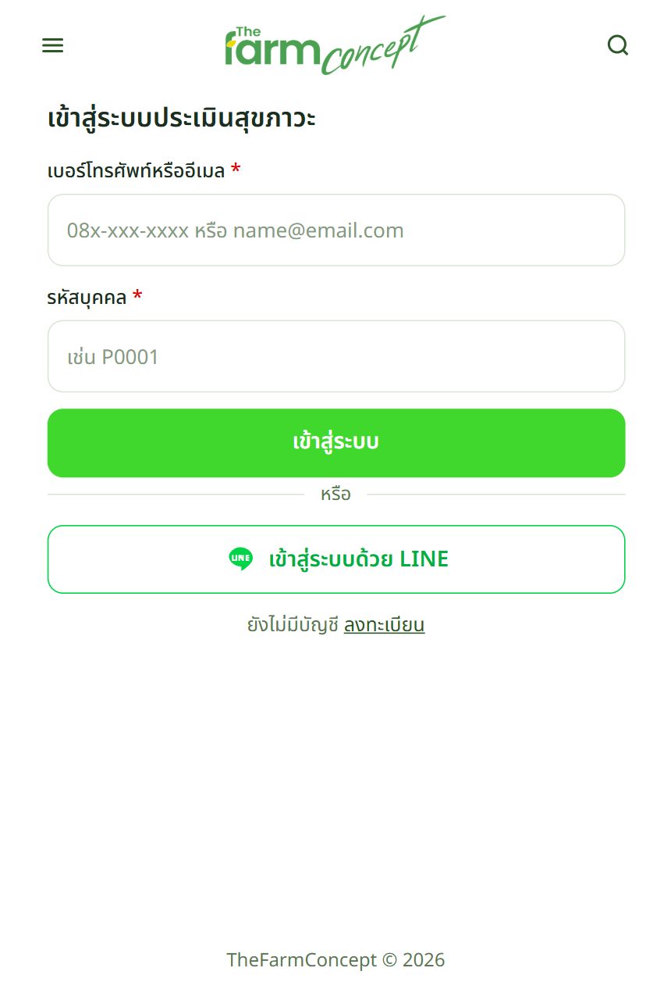
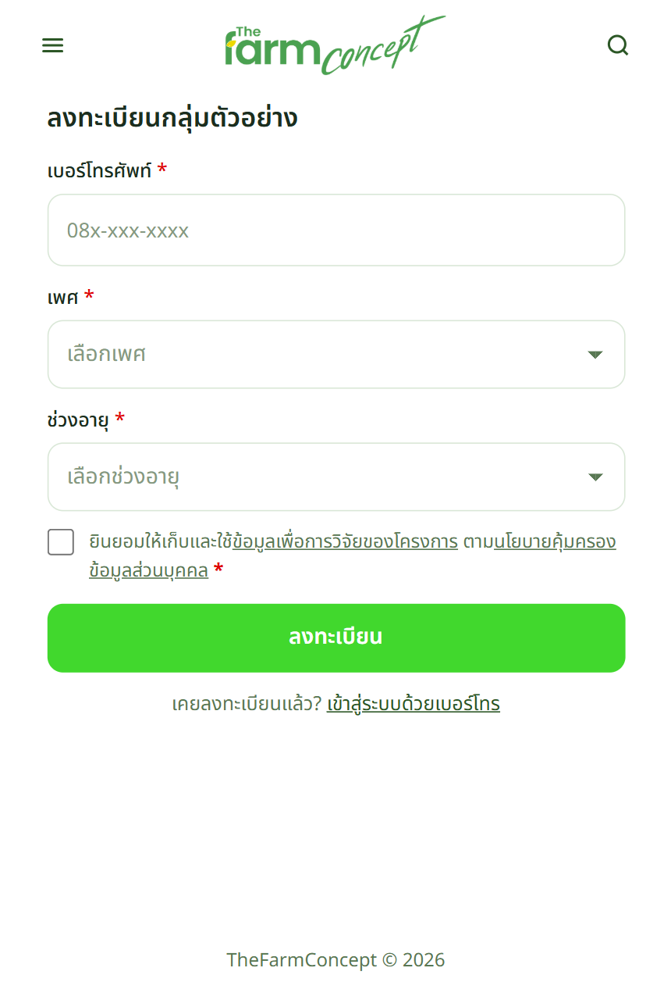
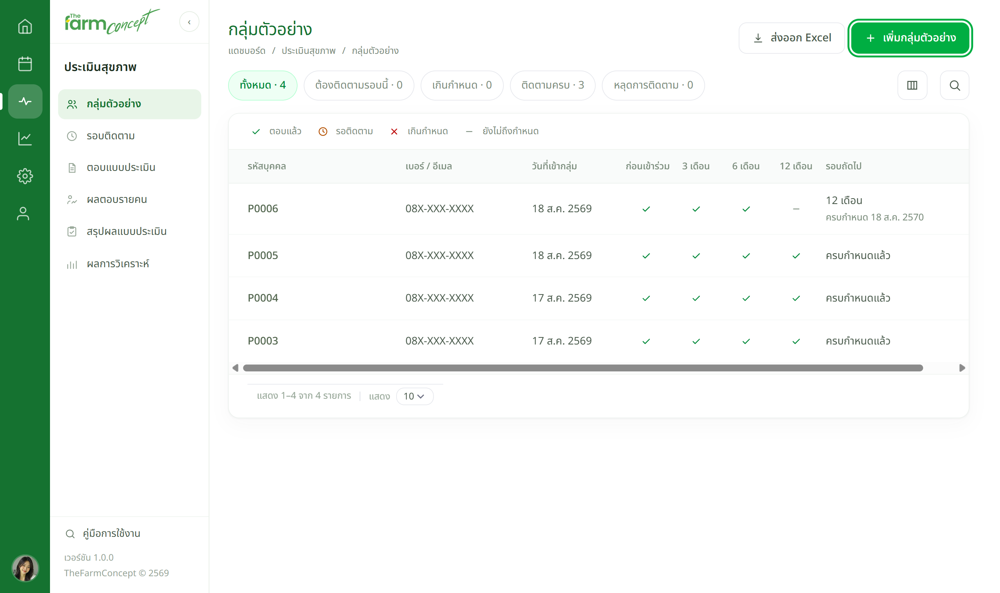
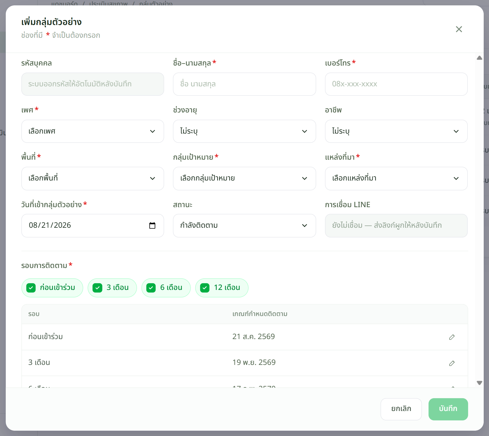

ทั้งเรื่องมีแค่ 4 จังหวะ
| จังหวะ | เกิดอะไรขึ้น |
|---|---|
| 1 · เข้ากลุ่ม | ลงทะเบียนเป็นกลุ่มตัวอย่าง — ทำเองหรือให้เจ้าหน้าที่ทำให้ก็ได้ · ได้ รหัสบุคคล มาหนึ่งรหัส |
| 2 · ตอบครั้งแรก | ตอบแบบประเมินรอบ ก่อนเข้าร่วม ไว้เป็นจุดตั้งต้นสำหรับเทียบ |
| 3 · ถึงรอบ | เจ้าหน้าที่สร้างรอบติดตามแล้วส่งแจ้งเตือน · ผู้เข้าร่วมได้การ์ดใน LINE |
| 4 · ตอบรอบถัดไป | ตอบซ้ำที่ 3 · 6 · 12 เดือน แล้วระบบเทียบให้เองว่าดีขึ้นหรือแย่ลง |
ผู้เข้าร่วม
ทางที่ 1 — ลงทะเบียนเอง
สแกน QR ติดตามสุขภาวะ (QR เดียวใช้ได้ทั้งโครงการ ไม่ผูกกับกิจกรรม) หรือเปิด /health


ระบบไม่เก็บชื่อ — ออก รหัสบุคคล ให้แทน เช่น
P0001 แล้วแสดงครั้งเดียวหลังลงทะเบียน
ต้องจดไว้ เพราะใช้คู่กับเบอร์โทรทุกครั้งที่เข้าระบบ ลืมแล้วต้องให้เจ้าหน้าที่เปิดดูให้
เจ้าหน้าที่
ทางที่ 2 — เจ้าหน้าที่ลงทะเบียนให้
ใช้กับคนที่กรอกเองไม่สะดวก หรือเก็บข้อมูลมาจากหน้างานเป็นกระดาษแล้วมาคีย์เข้าระบบทีหลัง


ช่อง รหัสบุคคล ปล่อยว่างไว้ ระบบออกให้เองหลังบันทึก · ตารางวันครบกำหนดคำนวณจากวันที่เข้ากลุ่มให้อัตโนมัติ แก้รายรอบได้ถ้าต้องการ
เจอปัญหาให้ทำอย่างไร
| อาการ | ให้ทำ |
|---|---|
| ผู้เข้าร่วมลืมรหัสบุคคล | เจ้าหน้าที่เปิดหน้ากลุ่มตัวอย่าง ค้นด้วยเบอร์โทร แล้วบอกรหัสให้ — กู้เองไม่ได้ |
| ลงทะเบียนซ้ำด้วยเบอร์เดิม | เบอร์เดียวมีได้หลายคนในบ้าน ระบบแยกด้วยรหัสบุคคล — ถ้าเป็นคนเดิมจริงให้ใช้รหัสเดิม อย่าสร้างใหม่ |
| ผู้เข้าร่วมขอออกจากโครงการ | เจ้าหน้าที่เปิดหน้ารายละเอียดของคนนั้น แล้วกด ยุติการติดตาม — ประวัติเดิมยังอยู่ |